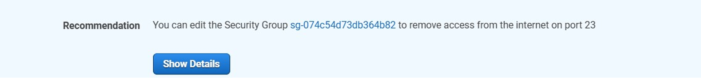

Shahzad Aslam GitHub: saslam-stack (github.com)
AWS Certified Solution Architect Associate Email: saslam79@hotmail.co.uk AWS Certified Cloud Practitioner linkedin.com/in/shahzad-aslam-556719190 HTML, CSS and JavaScript web development
how to harden network using Amazon Inspector and AWS Systems Manager
After launching infrastructure on AWS network finding vulnerabilities can
be a challenge for any company. Amazon Inspector is an automated
vulnerability management service that continually scans AWS workloads for
software vulnerabilities and unintended network exposure. Amazon Inspector
runs scans that analyse all your network configurations—such as security
groups, network access control lists (network ACLs), route tables, and
internet gateways—together to infer reachability. You don't need to send
packets across the virtual private cloud (VPC) network or connect to
Amazon Elastic Compute Cloud (Amazon EC2) instance network ports. It’s
like packetless network mapping and reconnaissance.
From Amazon Inspector, you will use the network reachability package to
analyse your network configurations to find security vulnerabilities in
your EC2 instances. The findings that Amazon Inspector generates also
provide guidance about restricting access that is not secure.
Step 1: Launch EC2 instance and add a tag.
To create an assessment target for Amazon Inspector Classic to assess, you
start by tagging the EC2 instances that you want to include in your
target. In this task, you tag the BastionServer instance.
Every AWS tag consists of a key and value pair of your choice. For
example, you might choose to name your key Name and your value
MyFirstInstance.
In the AWS Management Console, choose Services and select EC2. If you see
New EC2 Experience at the upper-left of your screen, confirm that EC2
instance (e.g. Test Server) is selected. In the left navigation pane,
choose Instances. The running Test Server and Application Server EC2
instances are listed.
Choose the Test Server instance. Choose the Tags tab and Choose Manage
tags.
Choose Add tag, and then enter the following information: Key:
SecurityScan Value: true. Choose Save.
Step 2: Configure and run Amazon Inspector.
In this task, you learn how to run an agentless network audit on
your EC2 instances using Amazon Inspector. For this lab, you use the
network reachability rules package.
In the AWS Management Console, choose then Services menu. Then
choose Security, Identity, & Compliance and choose Inspector. To
open the navigation pane, choose on the left. Choose Switch to
Inspector Classic
Choose Get started or click on help me create an assessment.
Choose Advanced setup at the bottom right side of the screen.
In the Define an assessment target section, configure the following
options: For Name, enter Network vulnerability Audit, Clear the check box
for All Instances. For Tags: Key, choose SecurityScan. For Tags: Value,
choose true. Clear the check box for Install Agents. Choose Next.
In the Define an assessment template section, configure the following
options: For Name, enter Assessment-Template-Network. For Rules packages,
leave Network Reachability-1.1 selected, but choose the next to each of
the other packages to remove them. For Duration, choose 15 Minutes. Clear
the check box for Assessment Schedule. Choose Next.
Choose Create.
You should see a SUCCESS notification, which confirms that the assessment
run was initiated. It takes about 3-5 minutes to complete. While you wait,
learn more about Amazon Inspector.
Check the status of the scan:
In the left navigation pane, choose Assessment runs. In the Amazon
Inspector - Assessment Runs section, choose the in the row for the run
that you initiated to expand it and access more options for your run. To
see the status of the run, choose Show status. If you do not see Show
status, choose at the top. To close and return to the previous screen,
choose Close. Once the status changes to Analysis complete,
Choose Findings in the left navigation pane.
Step 3: Analyse Amazon Inspector findings
The findings that these rules generate show whether your ports are
reachable from the internet through an internet gateway (including
instances behind Application Load Balancers or Classic Load Balancers), a
VPC peering connection, or a virtual private network (VPN) through a
virtual gateway. These findings also highlight network configurations that
allow for potentially malicious access, such as mismanaged security
groups, ACLs, and internet gateways.
Choose to expand the high-severity finding. You should see the following
key details: AWS agent ID shows you the affected EC2 instance. Description
shows the reason for the finding. In this case, TCP port 23, which is
associated with Telnet, is reachable from the internet. Recommendation
provides remediation suggestions.
Telnet is a text-based terminal emulation utility that is part of the
TCP/IP suite of protocols. It allows a system to connect to a remote host
to perform commands as if you were on the console of the remote machine.
Choose to expand the medium-severity findings and analyse the details. For
the medium-severity finding, TCP port 22, which is associated with SSH, is
reachable from the internet. SSH, like the Telnet utility, gives a user
the ability to log in to a remote machine and perform commands as if they
were on the console of that system. Telnet, however, is insecure because
its data isn't encrypted when communicated. SSH provides a secure,
encrypted tunnel to access another system remotely.
Step 4: Update security groups.
You see a few remediation options for the security findings that Amazon
Inspector discovered. The first option shows how to lock down port 22 to
specific IP addresses.
Choose to expand the details of the high-severity finding. In the
Recommendation section, choose the link to the security group. The link
should look similar to the following example: sg-074c54d73db364b82.

When the link opens, you can see the Test Server security group that is
attached to the EC2 instance that has produced findings within Amazon
Inspector.
Choose the Inbound rules tab. These are the current inbound rules for this
security group. They are also the high and medium findings that Amazon
Inspector caught.
Choose Edit inbound rules. For the inbound rule associated with port range
23, choose Delete. Port 23 Telnet is vulnerable to security attacks, and
the SSH protocol helps you to overcome many security issues of Telnet. SSH
is now the only major protocol to access the network devices and servers
over the internet.
For the SSH rule, remove the current inbound IP address of 0.0.0.0/0 by
choosing the X next to it to update the resource. The 0.0.0.0/0 IP address
for inbound rules means that port 22 is accessible from anyone on the
internet. You can adjust the inbound rules so that only your IP address is
able to access port 22. Although this option is much more secure, it still
has vulnerabilities. For example, someone could access the computer that
is associated with that IP address and gain access. For Source, choose the
Custom dropdown list, and then select My IP. Choose Save rules.
Step 4: Re-scan the AWS environment.
Navigate to the browser tab that has Amazon Inspector open. In the left
navigation pane, choose Assessment templates. Select the check box next to
Assessment-Template-Network, and choose Run.
This step runs the same scan from earlier in the lab and produces findings
from the security group updates. The scan takes approximately 30-60
seconds to complete.
In the left navigation pane, choose Assessment runs, and refresh every 10
15 seconds until the Status changes to Analysis complete.
In the left navigation pane, choose Findings, and then choose Date to sort
by most-recent findings. The high-severity finding is now gone, but the
medium-severity finding remains. Although port 22 was scoped down to allow
access to only your IP address, port 22 is still technically open to the
internet outside the VPC.
Step 5: Replace Bastion Server (Test Server) with Systems Manager.
You can replace the Bastion Server (Test Server) instance, which has
primarily used SSH to connect to the Application Server within the private
subnet. Instead, you use Session Manager via Systems Manager.
Systems Manager is a secure end-to-end management solution for hybrid
cloud environments. Systems Manager is the operations hub for your AWS
applications and resources and consists of four core feature groups.
In the AWS Management Console, choose Services and select EC2. In the left
navigation pane, choose Security Groups. Choose the Security group ID for
Test Server SG. Choose Edit inbound rules. Choose Delete, and then choose
Save rules to remove the SSH inbound rule.
In the left navigation pane, choose Instances. Select the check box for
Test Server. Then choose the Instance state dropdown list, and choose Stop
instance. In the confirmation dialog, choose Stop.
Next, connect to the Application Server directly using Session Manager.
With Session Manager, you can quickly and securely access your EC2
instances through an interactive one-click browser-based shell or through
the AWS Command Line Interface (AWS CLI) without the need to open inbound
ports, maintain bastion hosts, or manage SSH keys. Select the check box
next to Application Server, and then choose Connect. You are now connected
directly to the Application Server. Enter in the following Linux commands
to change the directory and to view the current working directory of the
Application Server. Cd ~ and then pwd
Finally scan to verify there are zero findings. Scan again by choosing
Assessment runs,